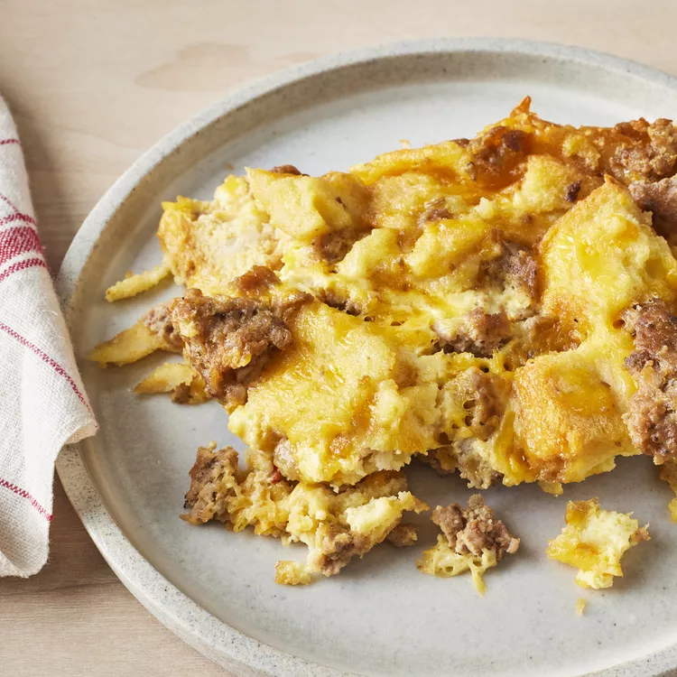

Christmas Breakfast Sausage Casserole

Why make a Christmas Breakfast Sausage Casserole?
Just in time for the holidays!
This meal will give you a great start before unraveling presents.
Ingredients
- 1 lb ground pork sausage
- 1 tblsp mustard powder
- 1/2 tblsp salt
- 4 eggs, beaten
- 2 cups milk
- 6 slices white bread, toasted and cut into cubes
- 8 oz mild cheddar cheese, shredded
Steps
- Crumble sausage into a medium skillet. Cook over medium heat
until evenly brown; drain.
- In a medium bowl, mix together mustard powder, salt, eggs and
milk. Add the sausage, bread cubes, and cheese, and stir to
coat evenly. Pour into a greased 9x13 inch baking dish. Cover,
and chill in the refrigerator for 8 hours, or overnight.
- Preheat oven to 350 degrees F (175 degrees C).
- Cover, and bake 45 to 60 minutes. Uncover, and reduce
temperature to 325 degrees F (165 degrees C). Bake for an
additional 30 minutes, or until set.